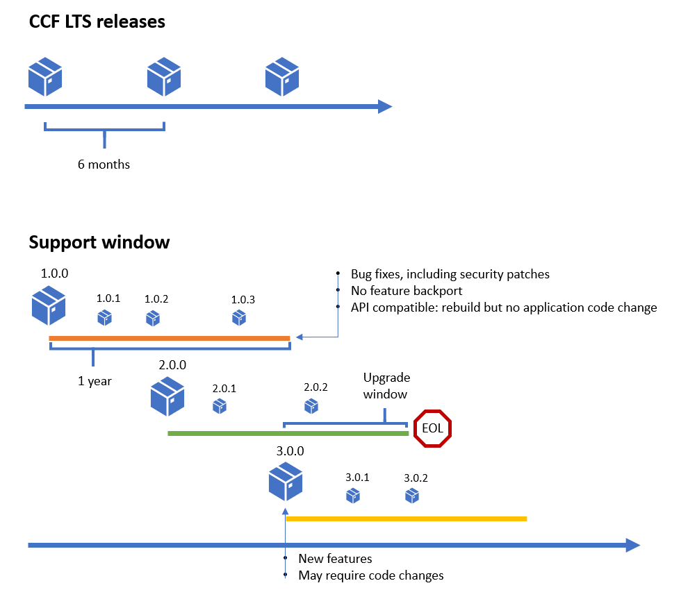

CCF release and support policy¶
API stability and versioning¶
REST endpoints exposed by CCF itself fall into three categories:
User-facing API¶
As defined under Built-ins.
These endpoints are expected to be quite stable across releases, but it is difficult for CCF itself to version them because its own versioning scheme may not be in-sync with a given application: release dates and numbers will differ. It is instead recommanded that applications programmatically disable these endpoints as exposed by CCF now, and replace them with their own as illustrated in Default Endpoints.
CCF exposes its implementation of the user built-in endpoints as a public, versioned C++ API and application code can dispatch to the chosen implementation for each of its own versions.
For example:
Application version 1.2 -> CCF::commit_v1
Application version 1.3 -> CCF::commit_v1
Application version 1.4 -> CCF::commit_v1
New CCF release adds CCF::commit_v2
Application version 1.2 -> CCF::commit_v1
Application version 1.3 -> CCF::commit_v1
Application version 1.4 -> CCF::commit_v1
Application version 1.5 -> CCF::commit_v2
APIs use _v${INCREMENTING_INTEGER} as a symbol suffix, starting at 1. Symbol versions are connected with CCF releases by release notes “eg. CCF release X.Y.Z introduces call_v2”.
Operator-facing API¶
As defined under Operator RPC API.
This is the API used to monitor the network topology, memory usage, endpoint metrics etc. The intention is to keep this API compatible without explicit versioning, by making sure that all changes are strict additions (ie. new fields, new arguments with default values that behave identically to the old call). Fields/input arguments will never be modified/deleted unless exceptionally and explicitly notified in advance to users.
Member-facing API¶
As defined under Member RPC API.
Same as operator-facing API.
Operations compatibility¶
Patches are compatible: nodes built from the same major release but different patches releases can run within the same service (backward and forward compatibility between these).
The last patch in a major release (N.0.final) is compatible with the first patch of the next major release (N+1.0.0): nodes built against both versions can be run within the same service.
Open-ended ledger backward compatibility: a ledger produced by version N.0.x can be read by all versions > N.0.x.
Forward compatibility of the ledger across patches: a ledger produced by version N.0.x can be read by all N.0.* patches in the same major release.
Snapshots are compatible across incremental major releases (going from N.0.x to N+1.0.x).
Support policy¶
In addition to the latest release, CCF will provide security patches and bugfixes on two long term support releases at any given time. These releases are guaranteed to be API-stable, but not ABI-stable. Applications will need to rebuild to pick up updates, but will not need to change their code.
A long term support release (LTS) will be supported for 1 year starting from its release date. That means that when a new LTS comes out, users effectively have a 6 months window to upgrade to the latest LTS.
REST API guarantees spelled out in the first section apply across releases, but new features, for example revisions of the User-facing C++ API or additions to the node API can only be introduced in a new release, never back-ported to an existing LTS.
